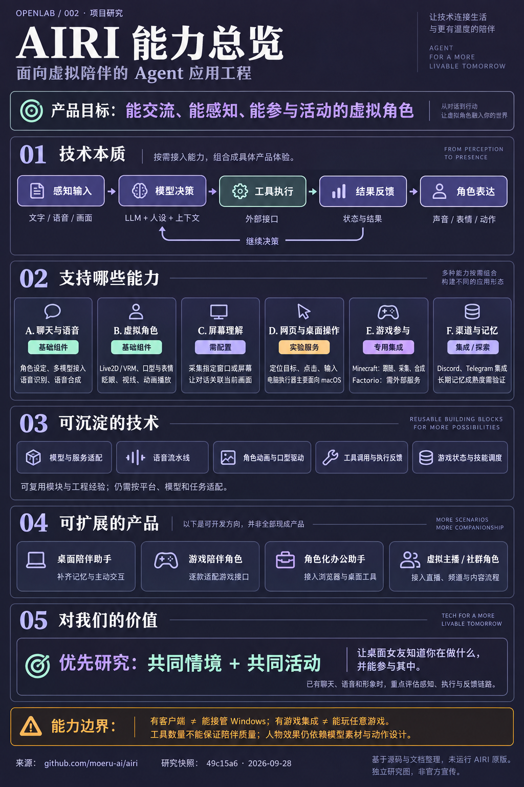

库的能力
把角色对话、语音、Live2D / VRM 表现、屏幕理解与外部工具组织在一起；提供 Minecraft、Factorio、Discord、Telegram 等专用集成。功能分布在主应用、独立服务和实验模块中，需分别配置。
让 Agent 拥有
声音、形象与行动。
面向虚拟陪伴的 Agent 应用工程：按需组合模型、声音、形象、感知与执行能力，形成具体产品体验。现阶段保留参考，等出现明确需求再按模块深入。

RESEARCH SUMMARY
先明确能力与用途，再决定是否投入。
把角色对话、语音、Live2D / VRM 表现、屏幕理解与外部工具组织在一起；提供 Minecraft、Factorio、Discord、Telegram 等专用集成。功能分布在主应用、独立服务和实验模块中，需分别配置。
面向虚拟陪伴的 Agent 应用工程。模型结合人设与上下文作出决策，按需接入感知和执行能力，再以声音、表情和动作呈现结果。陪伴是产品目标，操作是可扩展能力。
模型与服务适配、语音输入输出流水线、角色动画与口型协调、工具调用与执行反馈、游戏状态读取与技能调度，以及多端共享模块的组织方式。实际复用仍需适配。
配置后的角色聊天与语音交流、桌面虚拟角色展示；接入视觉后的屏幕相关对话；运行专用服务后的游戏互动与社群聊天；多模态 Agent 原型验证。
桌面陪伴助手、游戏陪伴角色、角色化办公助手、虚拟主播与社群角色。需要按目标补齐长期记忆、主动交互、平台执行器、游戏接口或直播流程，并非全部现成产品。
现阶段具有参考价值，保留为后期技术选型与实现参考，暂不继续深入研究或复现。待桌面女友出现明确的视觉、工具执行、游戏或角色表现需求时，再按模块查阅与验证。
边界：电脑操作服务主要面向 macOS；游戏需专用适配；长期记忆与陪伴质量未实测。引导图中的“优先研究”表示未来需求出现时的参考顺序，不表示当前启动深入研究。
01 / CAPABILITY ATLAS
点选一种能力，查看实现方式、
启用条件与实际边界。
通过模型提供商生成回复，角色卡定义名称、性格、场景与开场白。模型负责推理，AIRI 组织角色与交互体验。
“已有实现”表示源码或文档有依据，不代表本仓库完成了原版运行测试。在线手册标注适用于 0.11.3；它与本次 main 快照可能存在差异。
02 / UNDER THE HOOD
技术本质是模型、状态与外部能力的编排。
选择场景，沿着数据流看下去。
聊天、识别、合成与视觉可以分别选服务。自己部署界面，仍可能调用云端模型。
表情权重、口型和眨眼按各自规则更新；即时表现还需要处理动画之间的协调。
外部服务把环境事件送入系统，再执行命令并回传结果。支持某款游戏需要对应的集成。
EXECUTION, MADE CONCRETE
“控制角色”“操作软件”和“进入游戏”
有不同的执行接口。
角色提示词约定 ACT 指令来表达情绪与动作；前端把指令接到相应控制逻辑。语音口型另外跟随音频更新，眨眼等即时表现由规则处理。
这是应用内部驱动人物的逻辑。动作是否自然仍取决于素材、过渡与触发时机。
角色卡中的 ACT 约定 ↗表情控制源码 ↗工具层提供 DOM 元素查找、点击和输入接口，也有连接 Chrome 调试协议（CDP）的通道。模型利用按钮文本、角色与位置选择目标，执行后再读取状态。
必须有兼容且已连接的桥接。随附的 Grounding 扩展只负责读取页面结构；该路径中的真实操作由 macOS 输入执行器完成。不能把“有扩展”理解成已能执行所有 DOM 工具。
工具与能力检查 ↗只读扩展说明 ↗computer-use-mcp 把窗口、截图与辅助功能树等信息提供给 Agent。选好目标后，macOS 后端通过 Swift / Quartz 的 CGEvent 发送点击、输入、滚动等事件。
对 Windows 项目尤其重要：该服务当前主要面向 macOS；默认 dry-run 不注入键鼠，Linux X11 是旧实验后端。所研究的执行器注册中没有 Windows 原生执行器。
服务说明 ↗执行器选择源码 ↗这里的 Mineflayer bot 连接 Minecraft 服务器，读取玩家、方块和背包等状态。LLM 选择 goToPlayer、collectBlocks、craftRecipe 等工具，再由技能代码执行。
以“跟着我”为例，followPlayer 将玩家与距离交给反射运行时持续跟随。无需让模型逐帧决定 WASD。当前服务正计划迁移到 Fabric mod。
实际动作清单 ↗服务与迁移说明 ↗Agent 选择工具与参数；持续跟随由游戏执行逻辑完成。状态和失败原因再返回，供后续决策使用。
工具：followPlayer
参数：{
"player_name": "玩家名",
"follow_dist": 2
}架构依据：仓库结构图 · 开发者说明 · Minecraft 感知、反射、推理与执行分层
03 / CHARACTER EXPRESSION
3D 表现需要同时看实现、素材与时机。
下面展示的是代码能力，不是实测画质评分。
“有动作”与
“像在回应你”
之间，还有一段距离。
AIRI 已有 VRM 动画、眼神、表情与口型控制。仅用“鼠标跟随”概括会漏掉已有实现；这些实现最终是否自然，则需要在具体角色模型和真实对话中验证。
对桌面女友而言，我们更应关注：倾听时是否有回应、说话时动作是否贴合、被打断能否自然停止，以及闲置时能否保持舒服的存在感。
右侧体验判断为本仓库研究观点窄屏可左右滑动表格，查看实现、体验边界与源码。
| 表现层 | 源码中已有 | 还需验证什么 | 依据 |
|---|---|---|---|
| 01 眼神 | 自动眨眼、视线目标、待机随机眼球运动 | 视线是否有合理关注目标，转向是否自然 | animation.ts ↗ |
| 02 口型 | 音频口型权重映射到 VRM 元音表情 | 中文发音匹配、音画时序、停顿收口 | lip-sync.ts ↗ |
| 03 表情 | 情绪映射、强度、渐变、定时复位与口型避让 | 表情是否贴合上下文，是否过度或机械 | expression.ts ↗ |
| 04 动作 | 加载 VRMA 动画，并转换为角色动画片段 | 素材丰富度、动作切换、全身姿态协调 | animation.ts ↗ |
| 05 触碰入口 | 头、手臂、手与脚等身体区域的交互碰撞体 | 事件接入后，是否有合适的语音与动作反馈 | interaction.ts ↗ |
模型美术、绑定质量、动作素材与行为控制共同影响观感。源码里存在某个接口，不能直接证明最终体验已经成熟。查看社区的 VRM 改进建议 ↗该议题是用户提出的需求，不作为已完成实现或客观测评。
04 / FROM RESEARCH TO PRODUCT
如果我们已经具备“角色 + 声音 + Agent”，基础组合的新增价值有限。先保存模型接入、语音、角色表现、环境感知和执行反馈等参考路径。后续遇到具体需求，再判断能否节省实现成本。
这里基于你的产品描述提出取舍，未核对另一项目的现有实现，因此不声称它已优于或落后于 AIRI。
研究 computer-use-mcp 的工具契约、执行反馈和观察记录。若目标是 Windows，需要实现或接入相应执行后端；现有 macOS 代码不能直接移植运行。
参考 Minecraft 的动作目录与反射逻辑，让模型给目标、技能负责持续执行。每款游戏仍需要对应接口或独立控制方案。
可以参考口型和表情协调，但还需要自己的模型、动作素材和行为设计。长期记忆也需独立验证，不能从功能宣传推定已经解决。
角色对话、声音与形象已有基础；长期关系与自然互动仍需打磨。
可研究语音和角色表现的组合；直播流程、稳定性与内容策略需要另行设计。
适合观察感知、规划、执行和反馈；各游戏依赖专门服务与配置。
05 / EVIDENCE & NOTES